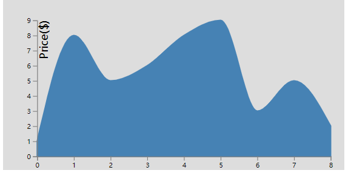
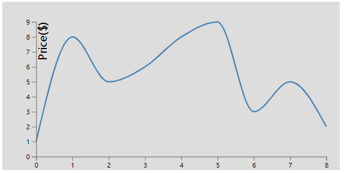
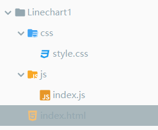

原文出处:本文由博客园博主feiquan提供。
原文连接:https://www.cnblogs.com/feiquan/p/10759393.html
原文连接:https://www.cnblogs.com/feiquan/p/10759393.html
d3最新是V5版的，比起V2的API变动了不少，写下我实现过程
效果图：
面积图：

折线图：

目录结构：



<!DOCTYPE html>
<html lang="en">
<head>
<meta charset="UTF-8">
<link href="css/style.css" media="screen" rel="stylesheet" type="text/css"/>
<title>Linechart1</title>
</head>
<body>
<div id="container"></div>
<script src="https://d3js.org/d3.v5.min.js"></script>
<script src="js/index.js"></script>
</body>
</html>
#container{
background: #ddd;
width: 500px;
height: 250px;
}
path{
fill: none;
stroke: steelblue;
stroke-width: 2;
}
.domain ,.tick line{
stroke:gray;
stroke-width: 1;
}var width=500,height=250,
margin={left:50,top:30,right:20,bottom:20},
g_width=width-margin.left-margin.right,
g_height=height-margin.top-margin.bottom;
//svg
d3.select("#container").append("svg")
//width,height
.attr("width",width)
.attr("height",height)
var g=d3.select("svg")
.append("g")
.attr("transform","translate("+margin.left+","+margin.top+")");
var data=[1,8,5,6,8,9,3,5,2]
//Scale
var scale_x=d3.scaleLinear()
.domain([0,data.length-1])
.range([0,g_width]);
var scale_y=d3.scaleLinear()
.domain([0,d3.max(data)])
.range([g_height,0]);
//画线函数
var line_generator= d3.line()
.x(function (d,i) {
return scale_x(i);
})
.y(function (d) {
return scale_y(d);
})
.curve(d3.curveMonotoneX)
// .curve(d3.curveMonotoneX) // apply smoothing to the line
//画路径
g.append("path")
.attr("d",line_generator(data)) //d="M1,0L20,40..... d-path data
// //画面积函数
// var area_generator= d3.area()
// .x(function (d,i) {
// return scale_x(i);
// })
// .y0(g_height)
// .y1(function (d) {
// return scale_y(d);
// })
// .curve(d3.curveMonotoneX)
//
// //画面积
// g.append("path")
// .attr("d",area_generator(data)) //d="M1,0L20,40..... d-path data
// .style("fill","steelblue")
//X轴
g.append("g")
.call(d3.axisBottom(scale_x))
.attr("transform","translate(0,"+g_height+")")
//Y轴
g.append("g")
.call(d3.axisLeft(scale_y))
//y轴文字
g.append("text")
.text("Price($)")
.attr("transform","rotate(-90)")
.attr("dy","1em")
.attr("text-anchor","end")其中，使用红色部分，注释绿色部分是面积图
使用绿色部分，注释红色部分是折线图
data数组是数据来源。
参考教程：https://www.imooc.com/learn/103